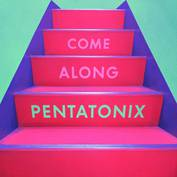
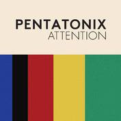
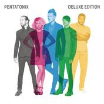
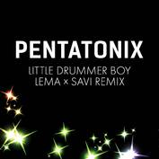
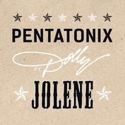
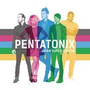
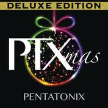
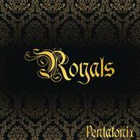
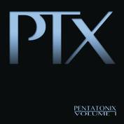

PTX专辑汇总

COME ALONG

The Sounds of Silence
MAKING Christmas

PTX Vol.3

ATTENTION

NEW RULES

HAVANA

Dexule Edition

Little Drummer Boy

Christmas Dexule

Dancing on my own

PTX Vol.IV

Imagine

Hallelujah
A Pentatonix Christmas

Jolene

Japan Super Edition
No

Deluxe Version
Can't Sleep Love
Cheerleader

PTX(2015)

That's Christmas To Me

PTX Vol.Ⅲ

Say something

PTXmas

PTX Vol.2

Royals

PTX Vol.1
Love Lockdown